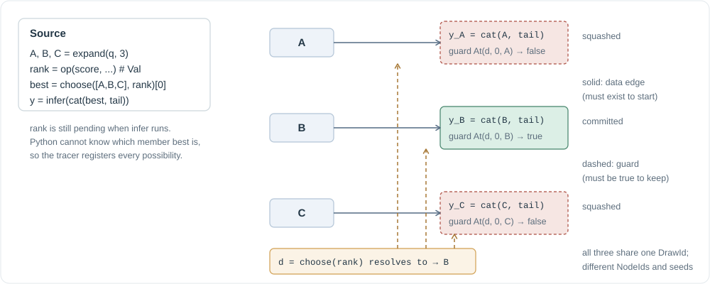
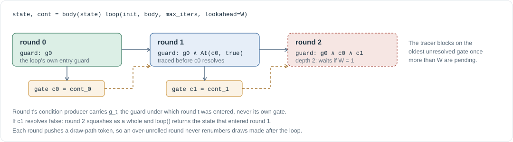

The tracer¶
The tracer runs your program on its own thread and turns every DSL call into graph registrations without waiting for results. This page covers the registration steps, the hoist that creates speculative branches, how gate and loop lower to decisions, and the pacing rules that keep the graph finite.
Five steps per call¶
Every infer or expand performs the same bookkeeping, all in microseconds:
- Reserve the draw from the context's
DrawLedger, keyed by(loop path, call site). This happens first, before any guard is read. - Freeze the descriptor. Validate and copy the sampling parameters, canonicalize the prompt spine, compute the NodeId and seed.
- Attach the ambient guard. The guard stack is thread-local: whatever literals the enclosing hoist or loop pushed, plus the entry guard carried by the input Seq.
- Register. Create a
Recordand post it to the scheduler thread withloop.call_soon_threadsafe. A NodeId collision inside one invocation is a hard error: the same descriptor registered twice means identity is broken. - Return a
Seqwhose spine is the input spine plusOut(node).
Nothing here blocks. The tracer thread pauses only at explicit exits (force), at embedded values (cat of a Val), and at the pacing points described below.
The hoist¶

infer over an unresolved Choice becomes one node per member, each with a data edge from its member and a guard literal from the decision. Open the diagram.{kind=link}
When infer receives a Choice whose decision is unresolved, it cannot know which member to continue, so it continues all of them:
infer(ChoiceRank(d, r)) ⟶ for each member s of the pool:
push At(d, r, s) onto the guard stack
register infer(s) under that guard
return Choice(d, {s: continuation_s}, r)
Three details make this correct rather than merely clever.
- One draw, many worlds. The occurrence is reserved once for the source-level call and threaded through every member (and through nested choices, when a member is itself a
Choice). The committed instance therefore has exactly the DrawId the serial program would assign. - The result is again a Choice over the same decision. Chains of continuations stay symbolic;
catdistributes over a single Choice among its parts. - Already-resolved decisions short-circuit. If
dresolved before the hoist, only the surviving member is continued, and its literal, already true, collapses out of the guard.
The fan-out is bounded fail-closed. One source-level call may hoist into at most 4096 world instances; a nested pool whose cross product exceeds that raises at trace time with a message pointing at the fix (pace the loop), instead of flooding the scheduler until every ranking times out.
Gate¶
gate(x, cond) lowers to a decision with members @gate:true and @gate:false and returns a Choice mapping only the true slot to x. Continuing it registers a node guarded by At(d, 0, @gate:true). There is no false-case fallback: forcing a gated-out value raises Squashed. A Val condition arms the decision watchdog; a plain boolean resolves immediately.
The cascade algorithm uses this to make an escalation conditional without a barrier: infer(gate(strong_prompt, rejected)) registers the expensive request under the reject guard, so with speculation on it can decode while the review is still being written, and with speculation off it runs only if actually rejected.
Loops¶

{kind=link}
loop(init, body, max_iters, lookahead) expects body(state) -> (next_state, continue) where continue is a Val. The tracer unrolls predict-taken: round t is traced under
The producer of round t's condition carries g_t, the guard under which round t was entered, never its own gate. The deadlock "the condition waits for a decision that waits for the condition" cannot be expressed, so no exemption analysis is needed.
Unrolling pauses when the tracer is more than lookahead unresolved gates ahead (default: the window W, or 0 when speculation is off). A false resolution squashes the whole over-unrolled tail at once; the waste is bounded by the lookahead and paid once. The return value is the state that entered the round whose condition said stop. A crash inside a speculatively traced round is deferred until the loop knows whether that round is real.
Pacing hand-written loops¶
Beam search is written as a plain for over rounds: expand, score, choose, expand. Continuing an unresolved Choice hoists into one instance per member, so with every earlier selection unresolved the instances multiply across rounds, pool^rounds. pace_unrolling(selections, lookahead) is the tracer-side throttle: it blocks while more than lookahead of the loop's selections are unresolved, waiting oldest first. Under the serial reference it is a no-op, because there every selection resolves inline.
Where the pace sits inside the round body decides what gets harvested. Pacing before the expand means round t's children register only after round t−2 resolves. Pacing after the expand registers the children first, so a candidate that finishes its step early gets its own continuation issued the moment its text exists, while the round's straggler is still decoding. Beam search chooses the deep position only when the window can fund depth 2 and the fan-out fits under the hoist cap.
Barriers you can see¶
| Construct | Effect on the tracer |
|---|---|
force(x) |
Blocks until x is data-complete and its guard is true |
cat(seq, some_val) |
Blocks until the Val resolves and its guard commits; the string becomes a literal |
infer(val_holding_a_seq) |
Blocks for the value, then continues it as ordinary work |
cat of two independent Choices |
Refused; the lowering builds no Cartesian product |
settle(choice) |
Blocks until the placeholder binds; returns the member handle, not content |
Each is correct and merely slow. The design deletes the alternative, opaque routing speculation, on purpose: a strategy that wants speculation at its pick exposes the pick as a choose.
Watchdogs and retirement¶
A ranking that never returns would leave guards pending forever. Every decision created from a Val arms a host-side timer (SpecConfig.decision_timeout, default 600 s) that fails the decision with TimeoutError if it does not resolve. When the tracer function returns, the runtime resolves every still-dangling decision to the empty selection, which squashes over-unrolled speculation and aborts its requests, then drains every op and tool obligation so a committed effect is never lost to shutdown.
In the code¶
tracing/context.py:Context.gen(the five steps),reserve_draw, the thread-local guard and path stacks,new_decision,wait_guard,force.tracing/api.py:_generate,_hoist_gen,gate,loop,pace_unrolling,settle,_HOIST_WORLD_CAP.execution/runtime.py:_submit_context,_retire_context,_drain_ops.- Tests:
test_trace.py,test_effects.py,test_spec_boundary_extension.py,test_algo_traces.py.
Next: The scheduler decides what to run.